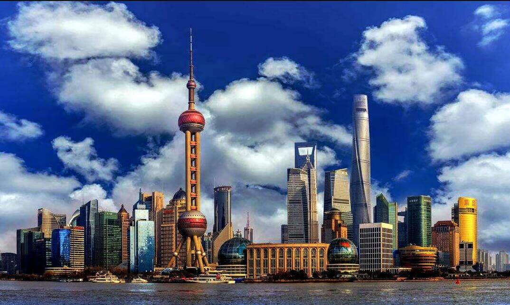

morly旅游圈
上海外滩（The Bound），位于上海市中心黄浦区的黄浦江畔，即外黄浦滩，1844年(清道光廿四年)起这一带被划为英国租界，成为上海十里洋场的真实写照，也是旧上海租界区以及整个上海近代城市开始的起点。 外滩南起延安东路，北至外白渡桥，在这段1.5公里长的外滩西侧，矗立着52幢风格迥异的古典复兴大楼，素有外滩万国建筑博览群之称， 成为旧上海时期的金融中心、外贸机构的集中带，也是旧上海资本主义的写照，一直以来被视为上海的标志性建筑和城市历史的象征。 与外滩隔江相对的浦东陆家嘴，有上海标志性建筑东方明珠、金茂大厦、上海中心大厦、上海环球金融中心等，则成为中国改革开放的象征和上海现代化建设的缩影。
外滩又名中山东一路，全长约1.5公里。位于浦西，东临黄浦江，西面为哥特式、罗马式、巴洛克式、中西合壁式等52幢风格各异的大楼，被称为“万国建筑博览群”。黄浦江是流经上海市区最大的河流，黄浦江源头坐落在浙江安吉龙王山自然保护区内。 由于黄浦江通江接海，受到潮汐影响，平均每天两次有明显的涨潮和退潮现象，一天内的水位落差可达4米以上，如遇天文大潮，水位落差就更大了。 上海外滩面对开阔的母亲河----黄浦江，背倚造型严谨、风格迥异的建筑群。由于其独特的地理位置及近百年来在经济活动领域对上海乃至中国的影响，使其具有十分丰富的文化内涵。上海外滩的江面、长堤、绿化带及美轮美奂的建筑群所构成的街景，是最具有特征的上海景观.1995年被评选为“90年代上海十大新景观”之一。
外滩位于上海市中心黄浦区的黄浦江畔，是最具上海城市象征意义的景点之一。 长1.5公里，由南向北漫步，左手边是宽阔的中山东一路，路边一字排开着数十栋风格迥异的外国建筑。 右手边是上海的母亲河—黄浦江，江上巨轮穿梭，江对岸则矗立着东方明珠、金茂大厦、环球金融中心、上海中心大厦等摩天建筑。 到了夜晚，浦江两岸霓虹齐放，适合与爱人漫步在外滩，感受着“不夜城”的韵味与浪漫，而夏季的外滩江风阵阵，更是乘凉的好去处。
用时参考:1-3小时
交通:地铁：2号线、10号线在南京东路站出站步行约15分钟
门票:免费 (tips:外滩观光隧道50元/人)
开放时间:全天
内容整理至网络，如有侵权，请联系我们！1255394075@qq.com
